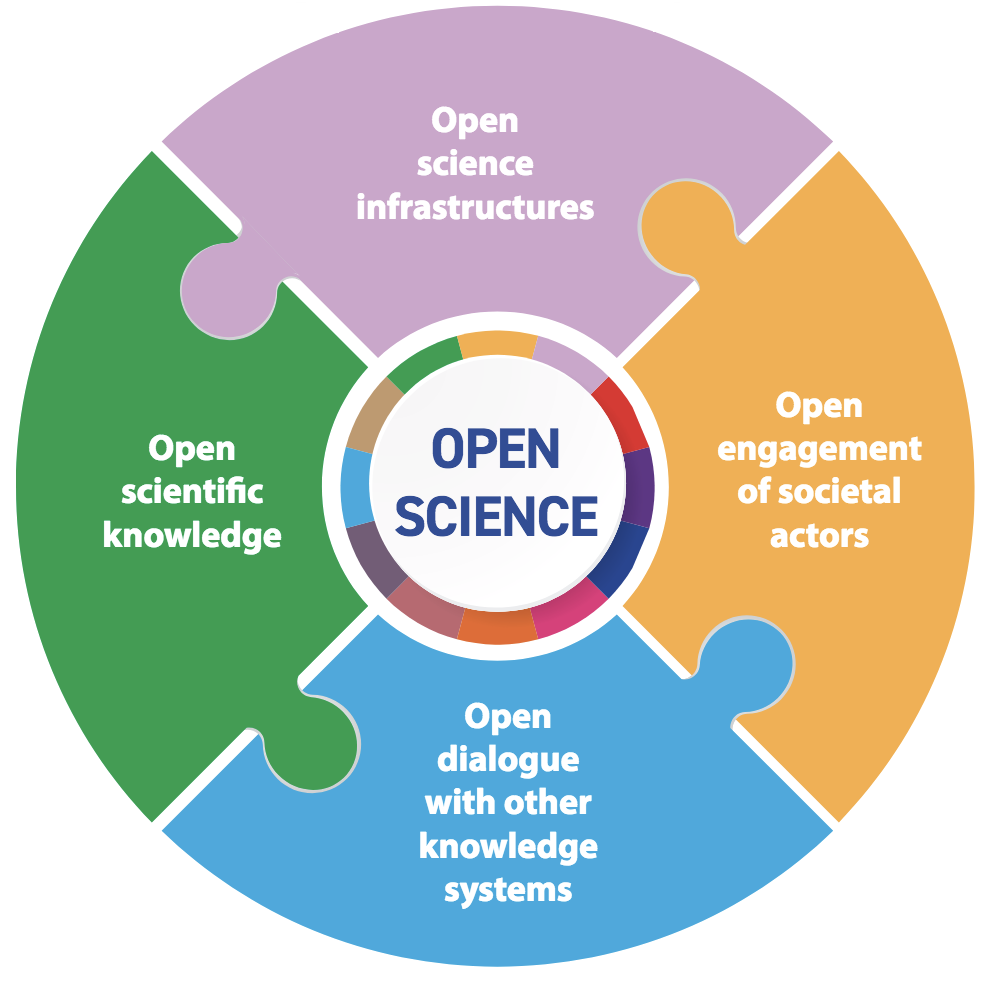

CIBB Conferences on Computational Intelligence Methods for Bioinformatics and Biostatistics
CIBB is an annual international scientific conference on computational intelligence and computational statistics applied to bioinformatics, biostatistics, medical informatics, and chemoinformatics.
The conference
The main goal of the CIBB international conferences is to provide a multidisciplinary forum for researchers interested in applying computational intelligence to open problems in bioinformatics, biostatistics, systems and synthetic biology, medical informatics, and chemoinformatics. Each year, conference participants discuss cutting-edge methodologies capable of accelerating discoveries in the life sciences, as well as the results of studies conducted in these fields.
In line with its tradition and origins, this scientific meeting brings together researchers from the international community who are interested in recent advances and future perspectives in the application of computer science, machine learning, and computational statistics to biology, medicine, healthcare, and chemistry. Moreover, given current trends and emerging opportunities at the interface between computing and the life sciences, the application of computational intelligence to systems and synthetic biology (and its impact on innovative medicine) is of particular interest to the conference.
Theoretical and experimental biologists are also encouraged to participate in order to present novel challenges and foster multidisciplinary collaboration, including new research directions related to theoretical computer science.
Conference participants typically include university professors, researchers, students, scientists from research centers, and professionals from industry and biomedical companies. Following each edition of the conference, peer-reviewed articles are published in the conference proceedings of Springer Lecture Notes in Computer Science (LNCS) and selected extended peer-reviewed articles are published in supplements, research topics, or special issues of journals such as Frontiers in Bioinformatics, Frontiers in Artificial Intelligence, Frontiers in Genetics, BMC Bioinformatics, BMC Medical Informatics and Decision Making, BMC Genomics, BMC Pharmacology and Toxicology, BMC Proceedings, Soft Computing, Artificial Intelligence in Medicine, International Journal of Approximate Reasoning.
CIBB is designed to foster scientific exchange in a friendly and collaborative environment. The conference brings together researchers in bioinformatics, health informatics, biostatistics, and related disciplines, providing ample opportunities to discuss new ideas, establish collaborations, and connect with colleagues from universities, research centres, and industry. These interactions take place throughout the conference, including during the main track, special sessions, coffee breaks, poster sessions, social events, and informal discussions.
The CIBB community warmly welcomes first-time participants, including Master of Science and PhD students, postdoctoral researchers, and early-career scientists. The conference is intentionally aimed at encouraging conversations with speakers, senior researchers, and fellow attendees, making it easy to ask questions, receive feedback, and build new professional connections.
Format
The conference lasts three days and is usually held in the European Union at the beginning of September each year. It comprises a main track and several special sessions that run in parallel. Participants can present their work either through oral presentations accompanied by slides or by presenting scientific posters. Sometimes the scientific meeting is preceded by a day of hands-on tutorials.
Peer review
The CIBB conference guarantees the high quality of the scientific papers presented through a rigorous double peer review process. First, short papers are peer-reviewed by anonymous experts which decide if they are accepted for the conference or rejected.
Since 2026, CIBB has adopted a double-blind review process. Authors submitting short papers must anonymize their manuscripts by removing their names, affiliations, and any other identifying information. The names of the reviwers are anonymous as well. Author names and affiliations are included in the final version of the paper only after acceptance.
After the conference, the extended articles based on the short papers undergo a second peer review process which decide if they can be published in the post-proceedings books, in the supplement journals, or rejected. Therefore, if an article is ultimately published in a CIBB journal supplement or in a CIBB proceedings volume, it means it has survived two processes of anonymous peer review.
The CIBB conference proceedings have been published by Springer within the Springer Lecture Notes in Computer Science (LNCS) book series, and are currently indexed in Scopus, Web of Science Conference Proceedings Citation Index, Semantic Scholar, Google Scholar, and other bibliography article databases.

Open science
The CIBB conferences support the principles of open science by encouraging article authors to use open source programming languages (such as R, Python, Julia, or Rust), to release their short papers as preprints on arXiv or bioRxiv, to openly publish their software code on open collaborative software source-code-hosting environments (such as Codeberg.org), to openly release their data on FAIR open data platforms (such as on Zenodo or Figshare), and to publish articles in open access journals.
Women's participation
The CIBB conference has consistently attracted a large number of female participants and has actively promoted women's participation both among attendees and in leadership roles.
From CIBB 2004 to CIBB 2026 (inclusive), 21 of the 63 keynote and invited speaker positions were held by female professors or female researchers, accounting for 33% of all keynote and invited speaker appointments.
Furthermore, 15 of the 62 general chair positions were held by female professors and researchers, representing 24% of all general chair appointments.
We hope to see these percentages increase in future editions of the conference!
Participation numbers
CIBB 2025 Milan: 260 participants (42% women)
CIBB 2024 Benevento: 96 participants (36.5% women)
CIBB 2023 Padua: 122 participants (43% women)
CIBB 2021 Virtual edition: 190 online attendees (percentage of women unavailable)
CIBB 2019 Bergamo: 91 participants (33% women)
Equity, diversity, and inclusion
CIBB is committed to fostering an inclusive, diverse, and equitable environment for all attendees. We actively encourage submissions and participation from female scientists, underrepresented groups, and early-career researchers. We strive for gender balance across our organizing committees, session chairs, and keynote invitations.
The aim of CIBB is to foster a high-quality conference within a kind, inclusive, accessible, and safe environment for all participants.
As a global event, we respect all dimensions of human diversity, including and not limited to: age, physical and cognitive ability, career stage, gender, gender identity, gender expression, geographic origin, language, neurodiversity, political views, religion, sexual orientation, and socioeconomic background. Respect regarding every aspect of human diversity is expected from organizers, presenters, chairs, and attendees across all conference spaces.
We are committed to proactively promoting the participation and leadership of individuals from underrepresented backgrounds, with particular support for women researchers and students. This commitment is reflected in our conference committees, as well as among our keynote speakers, session chairs, and attendees.
We acknowledge and value the significant contributions of women to scientific research and to the history of science.
Advice on how to write, review, and handle scientific articles
The authors willing to submit a short paper to CIBB, its proceedings, and its supplements are invited to follow the guidelines of the Ten Simple Rules collection from the PLOS Computational Biology journal:
Ten simple rules for getting published, Philip E. Bourne; PLOS Computational Biology 1(5): e57, 2005.
Ten simple rules for structuring papers, Brett Mensh, and Konrad Kording; PLOS Computational Biology 13(9): e1005619, 2017.
Ten simple (empirical) rules for writing science, Cody J. Weinberger; James A. Evans, and Stefano Allesina, PLOS Computational Biology 11(4): e1004205, 2015.
Ten simple rules for writing research papers, Weixiong Zhang; PLOS Computational Biology 10(1): e1003453, 2014.
Before addressing the comments of the reviewers, the authors of papers submitted to CIBB are invited to follow the recommendations of this article :
Ten simple rules for writing a response to reviewers, William Stafford Noble; PLOS Computational Biology 13(10): e1005730, 2017.
The CIBB reviewers are invited to follow the suggestions of this article:
Ten simple rules for reviewers, Philip E Bourne, and Alon Korngreen; PLOS Computational Biology 2(9): e0020110, 2006.
The CIBB track chairs and supplement editors are invited to follow the guidelines of this article:
Ten simple rules for serving as an editor, Cameron Mura, and Philip E Bourne; PLOS Computational Biology 19(3): e1010911, 2023.
The organizers of CIBB special sessions are invited to follow the pieces of advice of this article:
Ten simple rules for organizing a special session at a scientific conference, Davide Chicco, and Philip E Bourne; PLOS Computational Biology 18(8): e1010395, 2022.
Article authorship
When deciding which author names to include in their articles and in which order, CIBB authors should follow the authorship guidelines of the International Committee of Medical Journal Editors (ICMJE), as explained by the University of Toronto Faculty of Medicine.
When and where
The next edition of the conference, CIBB 2026, will happen at Sapienza University in Rome (Italy, EU) in person on 2nd, 3rd, 4th September 2026.
CIBB 2026 will be organized by Umberto Ferraro Petrillo and his team.
Please check out the CIBB 2026 website: https://cibb2026.teralab.ai
Photos
Here are some photos of the last editions of the conference (copyright belonging to the general chairs of each conference editions).


 CIBB 2023 Padua:
CIBB 2023 Padua: